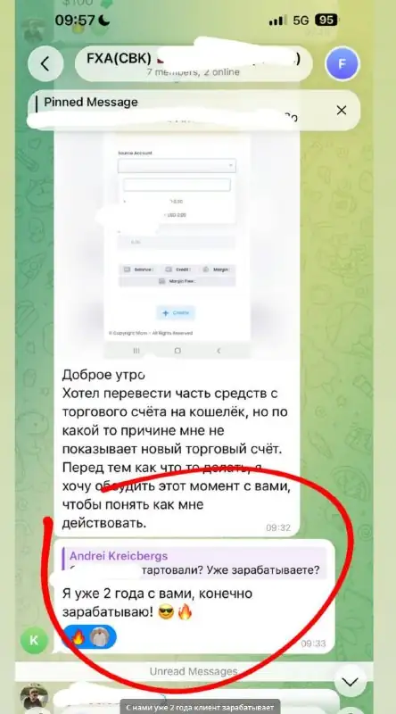
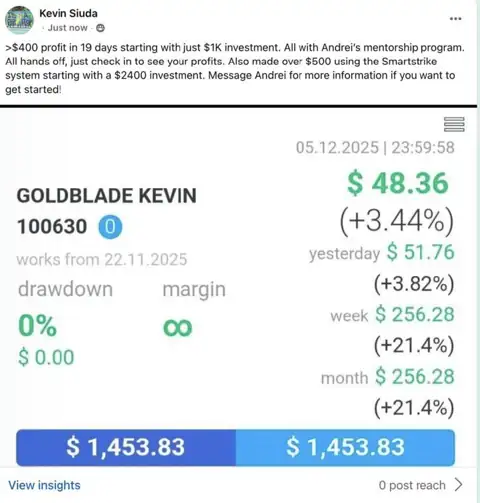
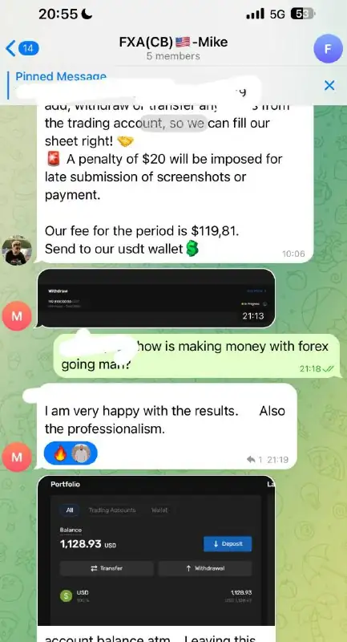
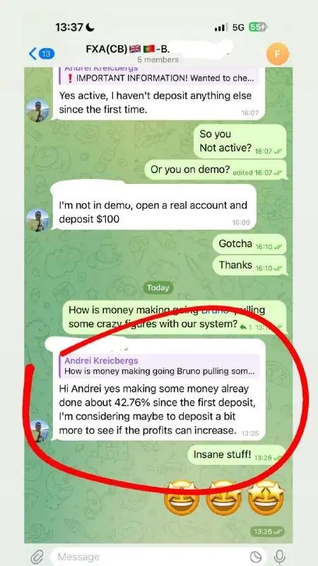
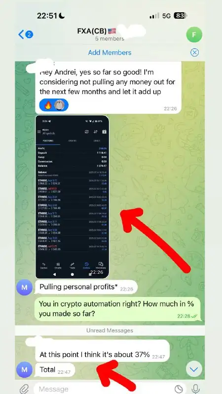
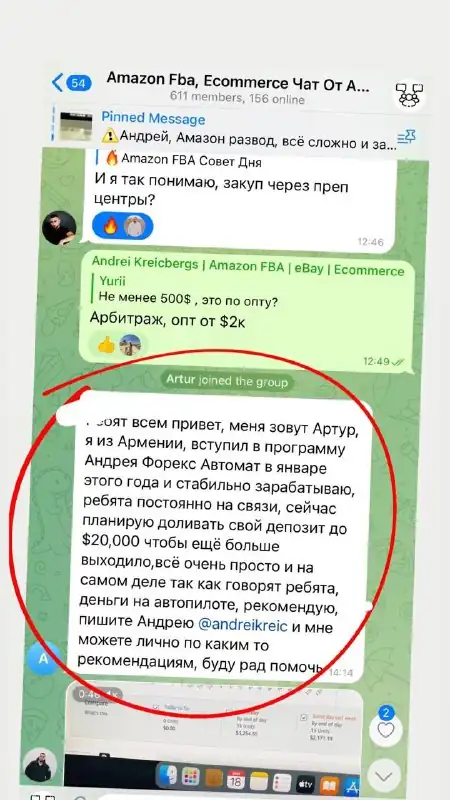
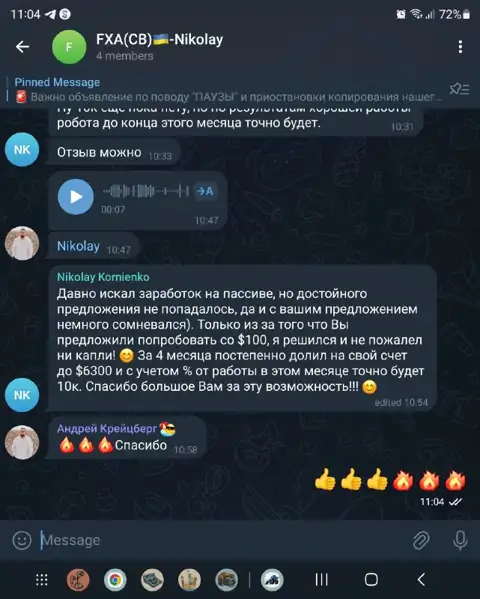
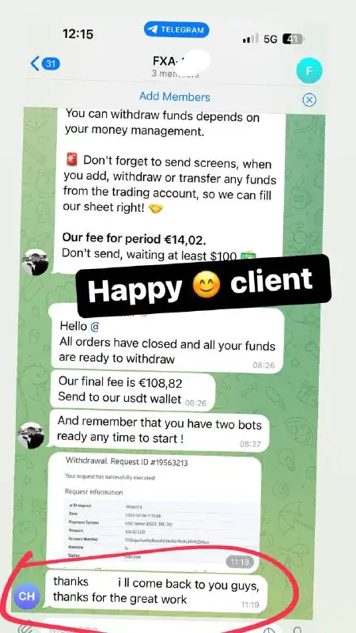
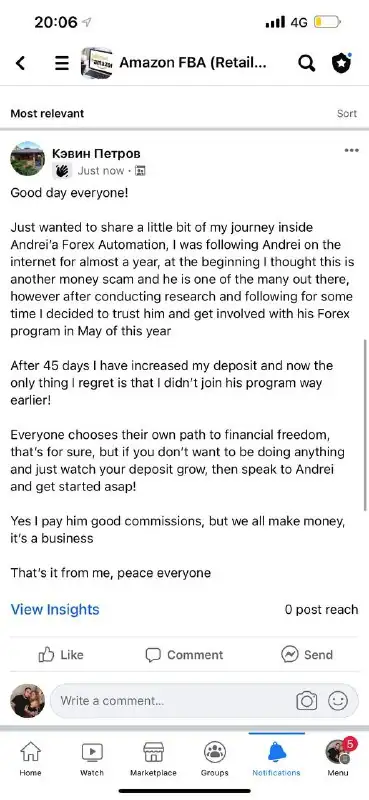

Was unsere
Kunden sagen
Unbearbeitete Screenshots von Kundennachrichten und Berichten seit 2022. Tippen Sie auf ein Bild, um es in voller Größe zu öffnen.

Danke, alles in Ordnung, wir sind zufrieden. Wir planen, das Kapital aufzustocken. Letzte Woche haben wir $124 Gebühr gezahlt, unser Verdienst war also genauso hoch; diese Woche sind wir im Plus.19.11.2026

Ja, der erste Monat war gut: etwa $120 nach der Gewinnbeteiligung bei $1.000 Investition, also rund 12% netto.18.11.2026

Ja, ich bin zufrieden, danke, ich habe sogar einen Freund mitgebracht. Ich habe vor 1,5 Jahren mit $15.000 angefangen, jetzt sind es fast $50.000: $35.000 Nettogewinn nach eurer Gebühr.13.11.2026

Der Gewinn war heute Nachmittag auf meinem Bankkonto, die Auszahlung habe ich erst gestern beantragt. Auf die Frage, wie viel er mit dem Service verdient hat: $15.000.13.11.2026

Noch ein Update für euch: 4,76%, das ist irre gut. Ich wünschte, ich hätte 10K drin. Manuelles Kopieren der Trades mit nur $100, wer es nicht mal ausprobiert, ist selbst schuld.13.11.2026

Ein Bericht an einen Kunden mit einer Gebühr von $311,67 für den Zeitraum. Der Kunde: „Erhalten, ich überweise und schicke einen Screenshot. $312 überwiesen, danke!“13.11.2026

Ich bin seit letztem September im Programm Forex Automation und mit den Ergebnissen sehr zufrieden: konstant, meist mehr als 10% im Monat, und Auszahlungen jederzeit ohne Probleme.13.11.2026

Was für ein Tag, schaut euch meinen bisherigen Gesamtgewinn nur mit Währungen an, und 1,26% an einem Tag, einfach großartig wie immer.13.11.2026

Anfangs war ich skeptisch, vor allem bei einer großen Summe, aber es hat Wunder gewirkt: Meine $5K bringen $350–450 im Monat. Sie haben die volle Kontrolle über Ihr Geld, niemand sonst.13.11.2026

Alles gut, keine Probleme, ich bin immer zufrieden damit. In 2 Monaten mit dem Währungsbot bin ich 1.076 GBP im Plus, also 21,53% bei 5K Kapital.13.11.2026

Danke, ich lasse mein Geld vorerst bei SmartStrike. Auf die Frage, ob sie mit Forex Automation Geld verdient: „Ja, tue ich.“05.11.2026

Das Konto eines Kunden am ersten Tag: +$961,13 (+9,63%) bei rund $10.000 Kapital. Der Kunde: „Beeindruckend! Ich habe mich gerade ins Konto eingeloggt, das ist kein Screenshot.“14.07.2026

Ich liebe es! 21,69% bei SmartStrike und 4,6% bei IronPips. Bisher bin ich echt beeindruckt.25.04.2026

Ich bin schon seit 2 Jahren bei euch, natürlich verdiene ich Geld!25.04.2026

Ich bin mit der Entwicklung des Tradings sehr zufrieden: Es ist für mich ein stetiges und verlässliches Wocheneinkommen geworden. Das Risikomanagement ist erstklassig.10.12.2025

Über $400 Gewinn in 19 Tagen mit nur $1K Startkapital, ganz ohne eigenes Zutun. Dazu über $500 mit dem SmartStrike-System bei $2.400 Startkapital.10.12.2025

Ich bin sehr zufrieden mit den Ergebnissen und auch mit der Professionalität des Teams.10.12.2025

Wir arbeiten seit fast einem Monat zusammen, und die vorgeschlagenen Systeme erfüllen unsere Erwartungen. Das Team versteht sein Handwerk. Wir hoffen auf eine langfristige Zusammenarbeit.08.12.2025

Ja, ich verdiene Geld: seit der ersten Einzahlung schon etwa 42,76%. Ich überlege, etwas mehr einzuzahlen, um zu sehen, ob die Gewinne steigen.18.10.2025

Ich verdiene was: 7,54%, wenn ich richtig liege. Der Screenshot zeigt die Trade-Historie bei Gold.30.09.2025

Ich möchte dem Team für seine Services danken! In rund 30 Tagen Abo gab es stabile Ergebnisse von etwa 25%.26.09.2025

Seit Juni 2024 habe ich bisher 200% gemacht. Auch wenn es eine kleine Investition war, habe ich trotzdem viel Gewinn gemacht.26.09.2025

Ja, erste Woche und einfach wunderbar: von $1.022 auf $1.536 USD, $515 Gewinn. Mein Mann eröffnet auch ein Konto, und wir wollen mehr einzahlen.02.08.2025

Hallo! Ich sehe, es hat schon 37,6% gemacht. Netto sind das 18,8%, $189,92 bei $1.000 Kapital.22.07.2025

So weit, so gut! Ich überlege, in den nächsten Monaten nichts abzuheben und es wachsen zu lassen. Im Moment sind es, glaube ich, insgesamt etwa 37%.22.07.2025

Ja, die Ergebnisse sind wirklich gut: fast $700 auf einem Demokonto in 2 Wochen.02.07.2025

Es läuft, schon +$20. Danke, ich bin froh, dass ich euch gefunden habe.30.04.2025

Läuft gut: etwa 1% Rendite pro Tag, rund $2K im Plus, seit wir vor einem Monat mit dem neuen Bot gestartet sind. Fast wie geschenktes Geld, besser als jedes Sparkonto.26.02.2025

Ich bin im Januar dem Programm Forex Automation beigetreten und verdiene konstant; das Team ist immer erreichbar. Ich plane, mein Kapital auf $20.000 aufzustocken. Alles ganz einfach, Geld auf Autopilot, ich kann es empfehlen.18.01.2025

Tolle Woche, Team! Wir hatten einige große Drawdowns, haben uns aber gut erholt. Unten meine Zahlungsbestätigung für die Gewinnbeteiligung ($1.121,44). Ich bin euch allen dankbar!18.01.2025

$2.500 vom konservativen Konto ausgezahlt. Ich liebe dieses Programm! Ich habe $35K investiert und fange jetzt mit regelmäßigen Auszahlungen an.15.05.2024

Das Geld ist angekommen! Ich habe gerade noch einmal $9K ausgezahlt. Euer Service ist herausragend; ihr habt mir geholfen, auch in schwierigen Zeiten durchzuhalten, danke.14.05.2024

Vom 1. März bis zum 1. Mai hatte ich 40% Gewinn, das ist echt der Wahnsinn. Ich habe noch einmal $4,2K überwiesen, jetzt habe ich $8K drin.11.05.2024

Wochengewinn auf dem Konto: $301,29. Der Kunde: „Das war eine gute Woche, ich kümmere mich um eure Gebühr, sobald ich dazu komme.“11.05.2024

Ich liebe das Forex-Trading. Am 25. März habe ich $1K nachgelegt und schon $338 verdient. Fantastisch, vielen Dank.08.05.2024

Nach dem Drawdown habt ihr euch super zurückgekämpft. Ich lege noch mehr Geld nach.03.04.2024

Ich habe am 17. Januar 2024 mit $1.000 angefangen und habe jetzt $1.186, fast 12% reiner Gewinn in 5 Wochen.04.03.2024

Am 22. Januar 2024 gestartet und $21.500 eingezahlt, dann das Kapital auf $43.000 verdoppelt. Der aktuelle Kontostand liegt bei $48.500, ein Plus von $5.500.02.03.2024

Der Forex-Bot läuft gerade ziemlich gut: Ich habe mit $150 angefangen, und mein Kapital liegt jetzt bei $185,22. Das sind +23% in etwa anderthalb Monaten; ich bin mit dem Service sehr zufrieden.28.02.2024

Bisher ein richtig guter Service! Ich freue mich darauf, so bald wie möglich wieder einzuzahlen. Euer Service sollte weltweit bekannt sein.10.02.2024

Super! Euch bezahle ich gern. Hier ist ein Screenshot als Bestätigung der Gebührenzahlung, danke!31.01.2024

Alles läuft super, wie ein Uhrwerk, und ich bin sehr zufrieden. Ich habe eine Möglichkeit gefunden, 20% im Monat auf mein Kapital zu verdienen, danke!27.01.2024

Normalerweise bin ich skeptisch, aber ich bin letzten Dezember mit $200 eingestiegen. Heute sind $430 auf meinem Konto, mehr als das Doppelte meiner Anfangsinvestition in 1,5 Monaten.27.01.2024

Ich möchte Forex Automation empfehlen. Ich habe zum Testen mit $100 angefangen, und es funktioniert wirklich: fast +20% in weniger als einem Monat. Ich nutze den Service weiter.26.01.2024

Ich habe mit $100 angefangen, weil ich skeptisch war. Innerhalb einer Woche hat der Bot etwa 10% gemacht, also habe ich nachgelegt. Einen Monat später liegen meine Erträge bei $581, etwa 16%. Eine tolle Möglichkeit für passives Einkommen.15.12.2023

In 2 Wochen habe ich mit ein paar Positionen, die ich nach den Vorgaben des Bots mit minimalem Kapital eröffnet habe, insgesamt 32% Gewinn gemacht. Ich kann den Januar kaum erwarten.14.12.2023

Ich finde den Service fantastisch. Am meisten schätze ich eure Kommunikation: Ihr habt mich immer auf dem Laufenden gehalten und meine Fragen beantwortet. Ich freue mich darauf, mehr bei euch zu investieren.11.12.2023

Ich habe lange nach passivem Einkommen gesucht und hatte meine Zweifel. Ich habe es mit $100 versucht und es kein bisschen bereut: In 4 Monaten habe ich mein Konto nach und nach auf $6.300 gebracht. Danke für diese Chance!11.11.2023

Euer aggressiver Roboter ist ein echtes Biest, der legt richtig los!01.11.2023

Guten Tag, alles bestens, und die letzten 2–3 Wochen waren einfach super, danke. Alles ausgezeichnet, ich bin zufrieden.01.11.2023

Ja, etwas langsamer als gedacht, aber wo sonst bekommt man so viel Extrageld, ohne etwas zu tun?16.06.2023

Ich teste den Forex-Trading-Service und mache fast seit dem ersten Tag Gewinn. Ich empfehle ihn: Der Start kostet nur $100, und die Einrichtung könnte nicht einfacher sein.16.06.2023

Ein Kunde, nachdem alle Trades geschlossen und das Geld ausgezahlt war: Danke für die tolle Arbeit, ich komme wieder auf euch zu.10.02.2023

Ja! Wow, was für ein Tag gestern! Total aufregend, danke an alle. Das war eine fantastische Überraschung.10.02.2023

Ich nutze den Service Forex Automation. Ich habe mit $5.000 angefangen, gesehen, dass es wirklich funktioniert, und mehr investiert. Jetzt arbeiten $16.000; es ist passives Einkommen, und ich bin mit allem zufrieden.17.12.2022

Gerade erst angefangen, erst unsere erste Woche, aber es sieht sehr vielversprechend aus: $700 an einem Tag. Auch die Kommunikation ist top. Der Konto-Screenshot zeigt +$777,92 (+7,77%).16.10.2022

Ich nutze den Service seit über vier Monaten: Er ist seriös, zuverlässig und verdient Ihr Vertrauen. Es ist passives Einkommen, genau wie versprochen.02.09.2022

Ich nutze es seit 4 Monaten und habe im Schnitt $200 pro Woche gemacht. Es ist voll automatisiert, ich kann meine Anfangsinvestition jederzeit abziehen, und nur ich habe die Kontrolle über das Geld.02.09.2022

Wochenbericht an einen Kunden: Gewinn von $57,30, $282,07 und $48,36 auf drei Konten (konservativ, Währungen, Metalle). Der Kunde antwortet, dass die Gebühr überwiesen ist.02.09.2022

Erst dachte ich, das ist wieder so ein Betrug, aber ich habe es trotzdem versucht. Nach 45 Tagen habe ich mein Kapital aufgestockt, und ich bereue nur, dass ich nicht früher eingestiegen bin.02.09.2022

Diese Woche $449 verdient. Ich bin schon lange Kunde; alles läuft passiv, und ich muss nichts anfassen.02.09.2022

Ich bin vor ein paar Tagen eingestiegen und habe schon meinen ersten Gewinn gemacht. Das ganze Trading wird für mich erledigt, ich muss nichts tun. Der Konto-Screenshot zeigt +$137,72 (+1,37%).02.09.2022

Chat mit einem Kunden: Der Gesamtgewinn für den Zeitraum betrug $457, der Kunde bestätigt den Bericht.02.09.2022

Ich bin seit über 5 Monaten im Programm: Ich stelle das Kapital, und das Team lässt mein Konto mit Trading-Robotern wachsen. Ich mache konstant $1.000–1.800 im Monat.02.09.2022

Das Programm funktioniert wirklich und ich muss nichts dafür tun. In den letzten 4 Tagen lag der Gesamtgewinn bei $232 bei einer Investition von 5000.02.09.2022

Ja, wir verdienen Geld, und das ist echt super.02.09.2022

Seit meinem Start sind 2 Wochen vergangen, und der Gesamtgewinn für diesen Zeitraum liegt bei über $300. Jetzt verdiene ich neben meinem Hauptgeschäft etwa $50 pro Tag als passives Einkommen.02.09.2022

Ich kann nicht glauben, dass ich in einer Woche $487 Gewinn gemacht habe, ohne etwas zu tun. Die beste Investition, die ich bisher gemacht habe!02.09.2022
Beginnen Sie mit einer Frage
Schreiben Sie uns über Telegram oder WhatsApp: Wir empfehlen Ihnen einen Broker für Ihr Land und ein passendes Risikomodell, richten eine 14-tägige Demo ein und helfen Ihnen beim Start.
Auf Telegram schreiben